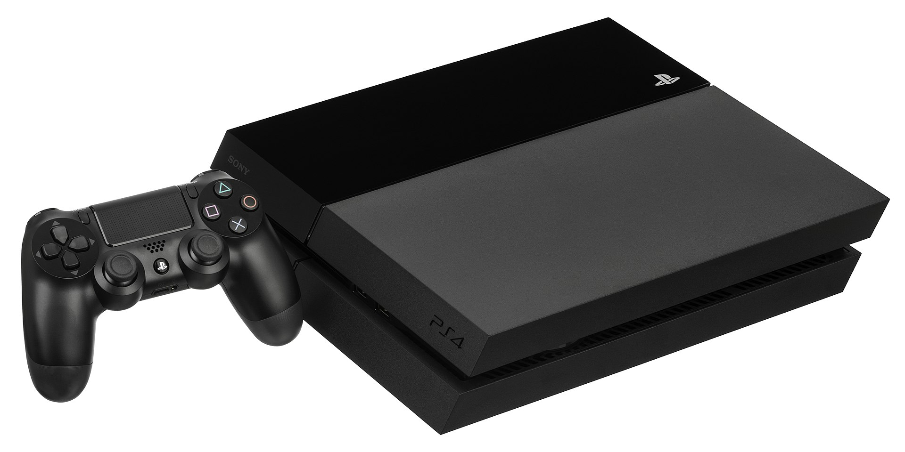

Nejlepší hry pro PlayStation 4
Co to je PlayStation 4?
PlayStation 4 je herní konzole od japonské společnosti Sony Interactive Entertainment, výrobu zajišťuje společnost Foxconn Technology Group. Konzole byla oznámena jako nástupce PlayStationu 3 během konference svolané 20. února 2013. Prodej konzole oficiálně začal 15. listopadu 2013 v Severní Americe, v Česku byl prodej zahájen 13. prosince 2013. PlayStation 4 patří již do 8. generace herních konzolí spolu s konkurenčními konzolemi jako je Nintendo Wii U a Microsoft Xbox One. Jde o druhou nejprodávanější herní konzoli v historii po PS2.
Společnost Sony při návrhu PS4 upustila od komplikované architektury PlayStationu 3, založené na procesoru Cell. U PS4 tak je použit model běžný u PC, který představuje zejména osmijádrové APU od společnosti AMD, jehož grafická část u základního modelu dosahuje výkonu 1,84 TeraFLOPs a u modelu PlayStation 4 Pro dosahuje grafická část výkon 4,2 TeraFLOPs
Sony u své v pořadí čtvrté konzole má v úmyslu zaměření na sociální hraní díky tlačítku share, který se nachází na ovladači DualShock 4. Při jeho stisknutí začnete streamovat Vašim přátelům in-game obraz hry, kterou aktuálně hrajete nebo naopak. Konzole umožňuje propojení se službami či zařízeními následujícími metodami: Gaikai, herní služba postavena na cloudu, která umožňuje streamovat videoherní obsah; PlayStation App, program navržený pro PS4, který pomocí chytrých telefonů nebo tabletů umožní druhý obrazový výstup a PlayStation Vita, která může sloužit jako ovladač konzole díky vlastnosti Remote Play. K Playstation 4 Pro je navíc možno zakoupit virtuální realitu, také ve zkratce VR, která vás dokáže přenést do pomyslné reality. Her na virtuální realitu je nespočet, od obyčejné tzv. skákačky, přes různé 360° pohledy z celého světa až po propracované virtuální války nebo závody ve sportovních autech.
Co to je Dualshock 4?
DualShock 4 je ovladač pro konzoli PlayStation 4. Je podobný DualShocku 3 s několika novými funkcemi. Jednou z novinek je vestavěná dvoubodová kapacitní dotyková plocha na přední straně ovladače, na kterou lze kliknout. To umožňuje dotykové podložce reprezentovat více tlačítek, jak je ukázáno ve verzi Elite Dangerous pro PS4, ve které lze čtyři rohy dotykové podložky namapovat na samostatné klikací akce. Ovladač podporuje detekci pohybu prostřednictvím tříosého gyroskopu a tříosého akcelerometru a vibrací. Zahrnuje neodnímatelné, dobíjecí lithium-iontová baterie 3,7 V, kterou lze nabíjet, když je systém v klidovém režimu. Váží 210 g a má rozměry 162 mm × 52 mm × 98 mm (6,4 palce × 2,0 palce × 3,9 palce).
Jak vypadá PlayStation 4 a Dualshock 4?
Vypadá nějak takto
O společnosti Sony Interactive Entertainment:
Sony Interactive Entertainment (SIE), dříve známá jako Sony Computer Entertainment (SCE), je nadnárodní společnost pro videohry a digitální zábavu, kterou zcela vlastní japonský nadnárodní konglomerát Sony Group Corporation . Skupina SIE se skládá ze dvou právnických osob: Sony Interactive Entertainment LLC (SIE LLC) se sídlem v San Mateo, Kalifornie , Spojené státy americké, a Sony Interactive Entertainment Inc. (SIE Inc.), se sídlem v Minato, Tokio , Japonsko. Společnost SIE Inc. se sídlem v Tokiu byla původně založena jako Sony Computer Entertainment Inc.(SCEI nebo SCE) v listopadu 1993, aby se postarala o podnik Sony ve vývoji videoher pro systémy PlayStation . SIE LLC byla založena v San Mateo v dubnu 2016, a je řízena prostřednictvím americké pobočky Sony , Sony Corporation of America .
Od uvedení původní konzole PlayStation v roce 1994 společnost vyvíjí domácí videoherní konzole PlayStation, příslušenství a služby. Společnost expandovala z Japonska do Severní Ameriky a Evropy, kde v květnu 1995 založila pobočky Sony Computer Entertainment America (SCEA) (ve Foster City, Kalifornie ) a Sony Computer Entertainment Europe (SCEE) v červenci 1995 (v Liverpoolu).). Společnost se rychle stala hlavním zdrojem Sony pro výzkum a vývoj videoher a interaktivní zábavy. V dubnu 2016 byly SCE a Sony Network Entertainment International restrukturalizovány a reorganizovány na Sony Interactive Entertainment, čímž byly přeneseny operace a primární cíle obou společností. Ve stejném roce byla založena společnost SIE LLC se sídlem v San Mateo v Kalifornii.
Sony Interactive Entertainment se zabývá výzkumem a vývojem , výrobou a prodejem hardwaru i softwaru pro videoherní systémy PlayStation . SIE je také vývojář a vydavatel videoherních titulů a provozuje několik dceřiných společností na největších trzích Sony: Severní Amerika , Evropa a Asie . Do srpna 2018 společnost celosvětově prodala více než 525 milionů konzolí PlayStation.
David Švancar © 2021